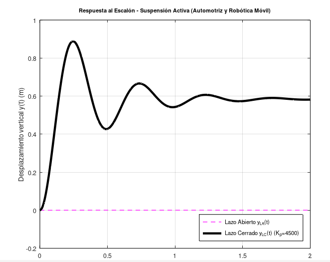
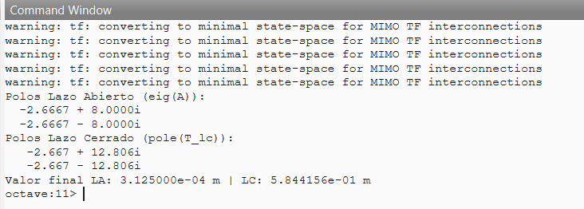

1. Contexto Automotriz, Robótica Móvil y Arquitectura de Control
Los sistemas de suspensión activa se aplican tanto en ingeniería automotriz (vehículos ligeros, prototipos y tren de rodaje) como en robótica móvil (plataformas terrestres que transitan por superficies irregulares). A diferencia de una suspensión pasiva con rigidez y amortiguamiento fijos, una suspensión activa incorpora un actuador capaz de entregar fuerza controlada para mejorar el confort, la estabilidad y el aislamiento frente a irregularidades del camino o del piso.
- Planta: Masa suspendida del chasis (m), resorte elástico (k_s) y amortiguador viscoso (b_s).
- Actuador: Dispositivo que genera la fuerza de control f_a(t) entre el chasis y la base/rueda.
- Sensores: Medición de desplazamiento vertical y(t) y velocidad vertical ẏ(t) para realimentación.
- Controlador: Ley de control con ganancia proporcional K_p para ajustar la respuesta dinámica.
- Perfil del camino, baches o desniveles representados por w(t) y su derivada ẇ(t).
- Cambios en la carga transportada o variaciones en los parámetros físicos del sistema.
2. Modelado Matemático Físico Paso a Paso
Aplicando la Segunda Ley de Newton sobre la masa suspendida en el eje vertical y(t), considerando comportamiento lineal de resorte y amortiguador:
f_a(t) - k_s·[y(t) - w(t)] - b_s·[ẏ(t) - ẇ(t)] = m·ÿ(t)
Reordenando términos para dejar la dinámica de salida a la izquierda y las acciones/perturbaciones a la derecha:
Tomando la entrada de control u(t) = f_a(t) (con w(t) = 0 y condiciones iniciales nulas), aplicamos la Transformada de Laplace:
G(s) = Y(s) / F_a(s) = 1 / (m·s² + b_s·s + k_s)
3. Espacio de Estados, Integradores s⁻¹ y Conversión Matricial
Definiendo los estados x₁(t) = y(t) (posición vertical) y x₂(t) = ẏ(t) (velocidad vertical):
ẋ₂(t) = -(k_s/m)·x₁(t) - (b_s/m)·x₂(t) + (1/m)·u(t)
A = [ 0 1 ] B = [ 0 ] C = [ 1 0 ] D = [ 0 ]
[ -k_s/m -b_s/m] [ 1/m ]
Conversión matricial G(s) = C(sI - A)⁻¹B + D:
[ k_s/m s + b_s/m]
G(s) = [1 0] · (1 / det(sI - A)) · [ s + b_s/m 1 ] · [ 0 ] + 0 = 1 / (m·s² + b_s·s + k_s)
[ -k_s/m s ] [ 1/m ]
4. Simulador Web Interactivo + Validación en GNU Octave
Parámetros del Sistema
Script Oficial en GNU Octave
% Limpia variables, consola y gráficas anteriores
clear; clc; close all;
pkg load control;
% Parámetros físicos de suspensión activa (aplicable a vehículos ligeros y robótica móvil)
m = 45;
ks = 3200;
bs = 240;
Kp = 4500;
% Matrices del modelo en espacio de estados: x1 = y(t), x2 = dy/dt
A = [0, 1; -ks/m, -bs/m];
B = [0; 1/m];
C = [1, 0];
D = 0;
% Función de transferencia G(s) = C*(sI - A)^(-1)*B + D y lazo cerrado con ganancia Kp
s = tf('s');
G_la = C * inv(s*eye(2) - A) * B + D;
T_lc = feedback(Kp * G_la, 1);
% Polos y valores finales en estado estacionario
disp('Polos Lazo Abierto (eig(A)):');
disp(eig(A));
disp('Polos Lazo Cerrado (pole(T_lc)):');
disp(pole(T_lc));
fprintf('Valor final LA: %.6e m | LC: %.6e m\n', dcgain(G_la), dcgain(T_lc));
% Respuesta al escalón en el intervalo de 0 a 2 s (igual al simulador web)
t = 0:0.005:2;
plot(t, step(G_la, t), 'm--', t, step(T_lc, t), 'k-', 'LineWidth', 1.8);
grid on;
title('Respuesta al Escalón - Suspensión Activa (Automotriz y Robótica Móvil)');
xlabel('Tiempo (s)');
ylabel('Desplazamiento vertical y(t) (m)');
legend('Lazo Abierto y_{LA}(t)', sprintf('Lazo Cerrado y_{LC}(t) (K_p=%d)', Kp), 'Location', 'southeast');


5. Análisis de Estabilidad y Conclusiones de Ingeniería
Con los parámetros nominales (m = 45 kg, k_s = 3200 N/m, b_s = 240 N·s/m), los valores propios de A en lazo abierto son s₁,₂ = -2.67 ± 8.00j. Al ubicarse en el semiplano izquierdo, el sistema es asintóticamente estable y presenta respuesta subamortiguada.
Al cerrar el lazo con K_p = 4500, los polos se ubican en s₁,₂ = -2.67 ± 12.81j: cambia la frecuencia natural y la dinámica de respuesta, y el valor final ante escalón pasa de 3.125 × 10⁻⁴ m en lazo abierto a 0.584 m en lazo cerrado, evidenciando el efecto de la acción proporcional sobre el comportamiento del sistema.